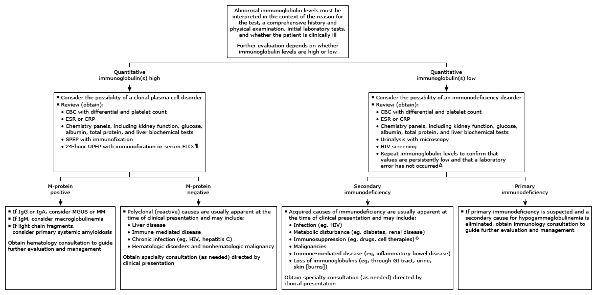

CBC: complete blood count; CRP: C-reactive protein; ESR: erythrocyte sedimentation rate; FLC: free light chain; GI: gastrointestinal; IgG: immunoglobulin G; IgA: immunoglobulin A; IgM: immunoglobulin M; MGUS: monoclonal gammopathy of undetermined significance; MM: multiple myeloma; M-protein: monoclonal protein; SPEP: serum protein electrophoresis; UPEP: urine protein electrophoresis.
* Quantitative serum immunoglobulins (IgG, IgA, and IgM) are routinely measured as part of the evaluation of monoclonal gammopathies and immune deficiencies. The normal reference range for IgG is approximately 800 to 1500 mg/dL, for IgA 90 to 325 mg/dL, and for IgM 45 to 150 mg/dL. Given the way the normal ranges are defined, there is a small percentage of otherwise healthy individuals that will fall either above or below the normal range. There are several methods for determining serum immunoglobulin levels, and laboratories use different systems. Interpretation of a specific abnormal result should be based upon the age-adjusted reference range reported by the laboratory.
¶ Electrophoresis is usually required to interpret an elevated immunoglobulin level. Immunofixation is usually required to characterize an M-protein. If abnormal FLC assay, electrophoresis and immunofixation of an aliquot from a 24-hour urine collection should be performed.
Δ If secondary immunodeficiency is suspected, obtain repeat immunoglobulin levels approximately 3 months after resolution of any concomitant illness associated with low immunoglobulin levels. Refer to the UpToDate table on the conditions associated with secondary immunodeficiency.
◊ Common therapies that cause secondary immunodeficiency are cytotoxic chemotherapy for malignancy, B cell-depleting therapies (eg, rituximab, CAR-T and other cell therapies, bi-specific T cell engagers), FcRn monoclonal therapies, long-term glucocorticoids, and select antiseizure medications.